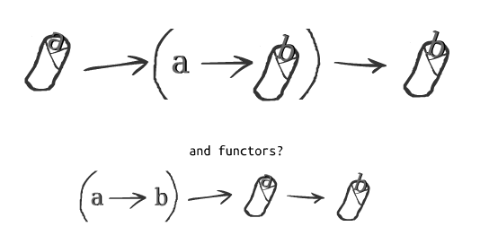
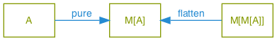
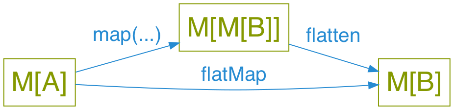
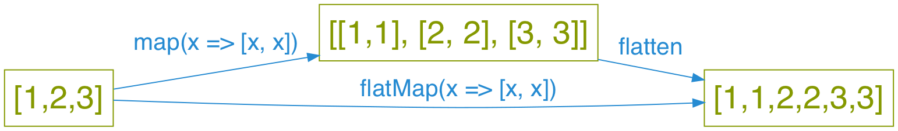

Why are monads hard?
Jake Woods
What's this talk about?
Monads!
Impossible to explain!
… I'm not going to teach you how to use them.
Instead we're going to figure out why they're so hard to learn.
And maybe help you get started.
So why are they so hard?
Monad is an overloaded term
It refers to lots of concepts
It's like trying to learn "Science"
You need to learn it bit-by-bit
Let's look at some Monads
An object with a flatMap method
[1,2,3].flatMap(a => [a, a]) // Returns [1,1,2,2,3,3]
Or with bind:
-- >>= is pronounced bind in Haskell. Wat! [1,2,3] >>= \a -> [a, a] -- Returns [1,1,2,2,3,3]
A "Container" type
// Java-ish List<String> // A "Container" of strings Optional<String> // A "Container" of either a string or nothing Future<String> // A "Container" of a string that we get from the future
// Scala List[String] // A "Container" of strings Option[String] // A "Container" of either a string or nothing Future[String] // A "Container" of a string that we get from the future
-- Haskell List String -- A "Container" of strings Maybe String -- A "Container" of either a string or nothing Async String -- A "Container" of a string that we get from the future
Something used with For/Do
// Scala for { a <- Some(5) b <- Some(10) } yield a + b // Returns: Some(15)
-- Haskell do a <- Just 5 b <- Just 10 pure a + b -- Returns: Just 15
A type with pure
// Java-ish Monad<A> pure(A a);
// Scala def pure(a: A): Monad[A]
-- Haskell pure :: (Monad m) => a -> m a
Example
// Java-ish List.pure("Hello") == List("Hello"); Option.pure("Hello") == Option.of("Hello"); Future.pure("Hello") == Future.completedFuture("Hello");
// Scala List.pure("Hello") == List("Hello") Option.pure("Hello") = Some("Hello") Future.pure("Hello") = Future.successful("Hello")
-- Haskell pure "Hello" :: List String == ["Hello"] pure "Hello" :: Maybe String == Just "Hello" pure "Hello" :: Future String == ...
Pure is also called "Return" in Haskell
myFunction = do a <- getA b <- getB return a + b
A type with flatten
A.k.a join or concat
// Java-ish Monad<A> flatten(Monad<Monad<A>> a);
// Scala def pure(a: A): Monad[A]
-- Haskell pure :: (Monad m) => a -> m a
Example
// Java-ish List.of(List.of(1,1), List.of(2,2)).flatten == List.of(1,1,2,2); Optional.of(Optional.empty).flatten == Optional.empty Future.of(Future.of("Hello")).flatten == Future.of("Hello");
// Scala List(List(1,1), List(2,2)).flatten == List(1,1,2,2); Some(None).flatten == None Future.successful(Future.successful("Hello")).flatten = Future.successful("Hello")
-- Haskell concat [[1,1],[2,2]] == [1,1,2,2] concat Just Nothing == Nothing concat (pure (pure "Hello")) :: Async String == (pure "Hello")
An interface/typeclass defining: join and pure
// Java-ish Monad<A> join(Monad<Monad<A>> nested); Monad<A> pure(A a);
// Scala def join(nested: Monad[Monad[A]]): Monad[A] def pure(a: A): Monad[A]
-- Haskell join :: (Monad m) => m (m a) -> m a pure :: (Monad m) => a -> m a
Example
For any Monad:
pure(1) // type: Monad<Int> pure(pure(1)) // type: Monad<Monad<Int>> join(pure(pure(1))) // type: Monad<Int>
For a concrete Monad:
List.pure(1) // type: List<Int> List.pure(List.pure(1)) // type: List<List<Int>> List.join(List.pure(List.pure(1)) // type: List<Int>
For a concrete Monad constructed normally:
List.join([[1,2], [3,4]]) // Returns [1,2,3,4] Maybe.join(Some(Some(5)) // Returns Some(5) Maybe.join(Some(None)) // Returns None
An interface/typeclass defining: bind and pure
// Java-ish Monad<B> bind<A,B>(Monad<A> a, Function<A, Monad<B>> fn); Monad<A> pure<A>(A a)
// Scala def bind[A,B](m: Monad[A], fn: A => Monad[B]): Monad[B] def pure[A](a: A): Monad[A]
-- Haskell bind :: (Monad m) => m a -> (a -> m b) -> m b pure :: (Monad m) => a -> m a
Example
For any Monad:
bind(pure(1), function(value) { return pure(value + 1) }); // Returns Monad(2)
For a concrete Monad constructed normally:
List.bind([1], value => [value + 2]) // Returns [3] Maybe.bind(Some(1), value => Some(value + 2)) // Returns Some(3) Maybe.bind(Some(1), value => None) // Returns None
A Burrito?

A way of composing certain types of functions
Normal Function Composition
// Java-ish String toUpperCase(String input) { ... } String trim(String input) { ... } String toUpperCaseAndTrim(String input) { return compose(toUpperCase, trim)(input); }
// Scala def toUpperCase(input: String): String = ... def trim(input: String): String = ... def toUpperCaseAndTrim = compose(toUpperCase, trim)
-- Haskell toUpperCase :: String -> String trim :: String -> String toUpperCaseAndTrim = toUpperCase . trim
Monadic Function Composition
// Java-ish Promise<String> toUpperCase(String input) { ... } Promise<String> trim(String input) { ... } Promise<String> toUpperCaseAndTrimService(String input) { return monadCompose(toUpperCaseService, trimService)(input); }
// Scala def toUpperCase(input: String): Promise[String] = ... def trim(input: String): Promise[String] = ... def toUpperCaseAndTrim = monadCompose(toUpperCaseService, trimService)
-- Haskell toUpperCase :: String -> Promise String trim :: String -> Promise String -- The "fish" operator or Kleisil arrow does monad composition in Haskell toUpperCaseAndTrim = toUpperCase >=> trim
Something to do with Sequential Computations?
In most languages sequence is implied:
def main() = { // Executes doA then doB then doC and then returns a result val a = doA(); val b = doB(); val c = doC(); a + b + c }
But in some languages that isn't the case
-- Executes in an arbitrary order as everything is lazy main = let a = doA b = doB c = doC in a + b + c
Monads imply sequential computation
-- Executes doA then doB then doC and then returns a result main = do a <- doA b <- doB c <- doC pure a + b + c
Something for managing side effects?
In some languages we can freely mix side-effects into normal code:
// Java-ish Integer add(Integer a, Integer b) { System.out.println("Hello World!"); return a + b; }
// Scala def add(a: Int, b: Int): Int = { println("Hello World!") a + b }
But not in all languages
add :: Int -> Int -> Int add a b = do println "Hello World" -- ERROR! Doesn't compile a + b
Instead we have to mark side effecting functions with a type
add :: Int -> Int -> IO Int add a b = do println "Hello World" -- Compiles pure $ a + b
They're all Monads!
No wonder they're so hard to learn…
Something something Laws
- There are rules defining how Monads must be implemented
- Mostly it's about making them act in a sane way
- They're outside the scope of this talk
Wait… Something is missing!
What about Maybe/List/Promise/Reader/Writer/State/IO
Well…
They are Monads!
But that's the boring bit about them.
Each of those types do something unique and valuable!
They enrich a type to give it extra functionality
MaybeaddsnullListadds multiple valuesPromiseadds asynchronyReaderadds dependency injectionWriteradds loggingStateadds arbitrary stateIOadds the ability to use the computer
This has nothing to do with Monads!
Example
// Java-ish Integer value; // A boring integer List<Integer> values; // An exciting bunch of integers! Future<Integer> value; // An exciting potentially asynchronous integer!
// Scala value: Int; // A boring integer values: List[Int]; // An exciting bunch of integers! value: Future[Int]; // An exciting potentially asynchronous integer!
-- Haskell value :: Int -- A boring integer values :: List Int -- An exciting bunch of integers! value :: Async Int -- An exciting potentially asynchronous integer!
Then why should I care if they're Monads?
They're all Generic types
// Java-ish Maybe<T> List<T> Promise<T> Reader<T> Writer<T> State<T> IO<T>
// Scala Maybe[T] List[T] Promise[T] Reader[T] Writer[T] State[T] IO[T]
-- Haskell Maybe t, List t, Promise t, Reader t Writer t, State t, IO t
We want to compose them…
Monads help us compose generic types!
They're a Design Pattern for a specific type of composition.
One way of thinking about Monads
When I say "X is a Monad" I know:
- This type is generic
- This type enriches normal types with extra behavior
- I can compose this type using flatMap/bind
- I can compose this type using For/Do comprehension
It's a design pattern!
Learn once, write everywhere!
In Summary
A Monad implies a whole bunch of things
Try to learn them a little bit at a time!
It's ok to be overwhelmed!
This stuff takes time to learn.
Thanks!
Questions?

Test: Pure and Flatten

Test: FlatMap

Example: List FlatMap
